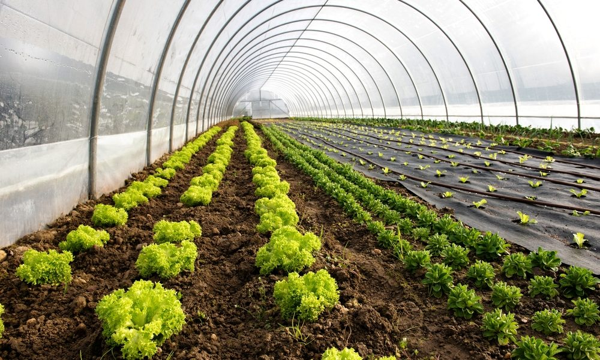
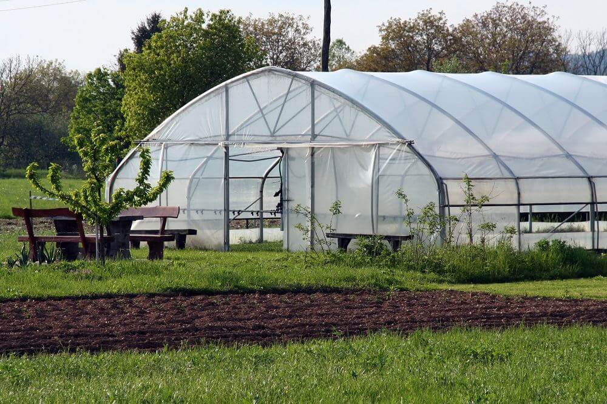

GREENHOUSE
Need of Greenhouse

A greenhouse (also called a glasshouse, or, if with sufficient heating, a hothouse) is a structure with walls and roof made chiefly of transparent material, such as glass, in which plants requiring regulated climatic conditions are grown. These structures range in size from small sheds to industrial-sized buildings. A miniature greenhouse is known as a cold frame. The interior of a greenhouse exposed to sunlight becomes significantly warmer than the external temperature, protecting its contents in cold weather.
Many commercial glass greenhouses or hothouses are high tech production facilities for vegetables, flowers or fruits. The glass greenhouses are filled with equipment including screening installations, heating, cooling, lighting, and may be controlled by a computer to optimize conditions for plant growth. Different techniques are then used to evaluate optimality-degrees and comfort ratio of greenhouseate (i.e., air temperature, relative humidity and vapor pressure deficit) in order to reduce production risk prior to cultivation of a specific crop.
Why Different Greenhouse Designs for Different Climates?

Not all greenhouses are created equal—a design that works well in a cool climate with long cold winters, snowfall, low light and high winds will not be the best design for a humid, tropical climate with variable light intensity.Different greenhouses are characterized by the level of protection from the outside environment they can offer and the capability they can provide growers to control the inside environment to a specific set of conditions.
The level of protection required depends on the type of crop being grown and the local climate. The objective with building any greenhouse is to find a design that will allow the grower to overcome the most limiting climatic problems in their particular area and obtain the maximum growth rates possible from their crops.
GREENHOUSE TYPE BASED ON SHAPE
click on image to know more about it
Smart greenhouse
The technological development in Smart greenhouses has come so far that we no longer can do without a smart computer to control our greenhouses. Similar to the computers in modern vehicles and airplanes, the greenhouse computer allows for the most efficient way to operate in. Intelligent controls create the optimal growing climate in respect to energy use, water usage and nutrients. By taking the costs of these recourses into account, the greenhouse computer does not only create the best circumstances for your crop to grow, it significantly cuts on operational expenses .greenhouses may require cooling systems. This occurs when the daily average temperature is too high for the crops to function properly. In this case, cooling the greenhouse is the only way to keep the crops inside healthy and productive. Cooling a greenhouse is more expensive than heating a greenhouse. An investment in a cooling system must therefore be a well considered decision .There are two systems which use this principle in commercial greenhouses: high pressure fogging and the Pad & Fan cooling system. In the few years, semi-closed greenhouses have been developed based on the same principles as the Pad & Fan system.
The Pros of Greenhouse Farming
Increased production:
Greenhouse farming is considered an implementation of intensive agriculture and can provide an increase in crop production. This due to the fact that you have more control for creating the optimal climate conditions needed for plant growth and are able to grow more plants per square feet compared to growing crops in an open field.
Minimizing production risks:
Being in an enclosed space can help prevent crops from suffering damage from climate change related events such as sudden increases or drops in temperature, as well as keeping crops away from birds and other animals.
Maximizing profits:
Multiple studies have stated that the profits per crop per square feet can be even twice or thrice as big when implementing greenhouse farming as an alternative to open field agriculture and when combining the practice with other strategies such as hydroponics. By utilizing resources in a more efficient manner you’re able to create less waste, which in turn can translate into bigger profits.
The Cons of Greenhouse Farming
You need a sizeable initial investment:
Greenhouse structure and design is relatively expensive, which can be challenging for many farmers. Greenhouse farming is recommended for profitable crops that are easy to commercialize in order to maximize the chances of getting your investment back quickly
Precise greenhouse design:
Being in an enclosed space can help prevent crops from suffering damage from climate change related events such as sudden increases or drops in temperature, as well as keeping crops away from birds and other animals.
High production costs:
Operational costs for greenhouse farming are generally higher than those from open field agriculture. Maintaining adequate conditions for plant growth inside the greenhouse means spending money on electricity and/or gas, just to mention an example.
Name of the students in project group:
Suraj Dhanpal Shete
shetesuraj1414@gmail.com
Sumit Krushnat Waghmare
Sumitkwaghmare556@gmail.com
Nikhil Gopal Rathod
nikhilrathod0704@gmail.com
Project Guide:
Mr. Pralhad Gavali
pralhad.gavali@ritindia.edu